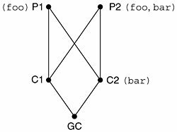
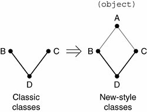

13.11. InheritanceInheritance describes how the attributes of base classes are "bequeathed" to a derived class. A subclass inherits attributes of any of its base classes whether they be data attributes or methods. We present an example below. P is a simple class with no attributes. C is a class with no attributes that derives from (and therefore is a subclass of) P: class P(object): # parent class pass class C(P): # child class pass >>> c = C() # instantiate child >>> c.__class__ # child "is a" parent <class '__main__.C'> >>> C.__bases__ # child's parent class(es) (<class '__main__.P'>,) Because P has no attributes, nothing was inherited by C. Let us make our example more useful by giving P some attributes: class P: # parent class 'P class' def __init__(self): print 'created an instance of', \ self.__class__.__name__ class C(P): # child class pass We now create P with a documentation string (__doc__) and a constructor that will execute when we instantiate P, as in this interactive session: >>> p = P() # parent instance
created an instance of P
>>> p.__class__ # class that created us
<class '__main__.P'>
>>> P.__bases__ # parent's parent class(es)
(<type 'object'>,)
>>> P.__doc__ # parent's doc string
'P class'The "created an instance" output comes directly from __init__(). We also display some more about the parent class P for your information. We will now instantiate C, showing you how the __init__() (constructor) method is inherited with its execution: >>> c = C() # child instance
created an instance of C
>>> c.__class__ # class that created us
<class '__main__.C'>
>>> C.__bases__ # child's parent class(es)
(<class '__main__.P'>,)
>>> C.__doc__ # child's doc string
>>>C has no declared method __init__(), yet there is still output when instance c of class C is created. The reason is that C inherits __init__() from P. The __bases__ tuple now lists P as its parent class. Note that documentation strings are unique to classes, functions/methods, and modules, so a special attribute like __doc__ is not inherited by its derived classes. 13.11.1. __bases__ Class AttributeIn Section 13.4.4, we briefly introduced the __bases__ class attribute, which is a tuple containing the set of parent classes for any (sub)class. Note that we specifically state "parents" as opposed to all base classes (which includes all ancestor classes). Classes that are not derived will have an empty __bases__ attribute. Let us look at an example of how to make use of __bases__. >>> class A(object): pass # define class A ... >>> class B(A): pass # subclass of A ... >>> class C(B): pass # subclass of B (and indirectly, A) ... >>> class D(A, B): pass # subclass of A and B ... >>> A.__bases__ (<type 'object'>,) >>> C.__bases__ (<class __main__.B at 8120c90>,) >>> D.__bases__ (<class __main__.A at 811fc90>, <class __main__.B at 8120c90>) In the example above, although C is a derived class of both A (tHRough B) and B, C's parent is B, as indicated in its declaration, so only B will show up in C.__bases__. On the other hand, D inherits from two classes, A and B. (Multiple inheritance is covered in Section 13.11.4.) 13.11.2. Overriding Methods through InheritanceLet us create another function in P that we will override in its child class: class P(object): def foo(self): print 'Hi, I am P-foo()' >>> p = P() >>> p.foo() Hi, I am P-foo() Now let us create the child class C, subclassed from parent P: class C(P): def foo(self): print 'Hi, I am C-foo()' >>> c = C() >>> c.foo() Hi, I am C-foo() Although C inherits P's foo() method, it is overridden because C defines its own foo() method. One reason for overriding methods is because you may want special or different functionality in your subclass. Your next obvious question then must be, "Can I call a base class method that I overrode in my subclass?" The answer is yes, but this is where you will have to invoke an unbound base class method, explicitly providing the instance of the subclass, as we do here: >>> P.foo(c)
Hi, I am P-foo()Notice that we already had an instance of P called p from above, but that is nowhere to be found in this example. We do not need an instance of P to call a method of P because we have an instance of a subclass of P which we can use, c. You would not typically call the parent class method this way. Instead, you would do it in the overridden method and call the base class method explicitly: class C(P): def foo(self): P.foo(self) print 'Hi, I am C-foo()' Note how we pass in self explicitly in this (unbound) method call. A better way to make this call would be to use the super() built-in method: class C(P): def foo(self): super(C, self).foo() print 'Hi, I am C-foo()' super() will not only find the base class method, but pass in self for us so we do not have to as in the previous example. Now when we call the child class method, it does exactly what you think it should do: >>> c = C()
>>> c.foo()
Hi, I am P-foo()
Hi, I am C-foo()Core Note: Overriding __init__ does not invoke base class __init__ 13.11.3. Deriving Standard TypesNot being able to subclass a standard data type was one of the most significant problems of classic classes. Fortunately that was remedied back in 2.2 with the unification of types and classes and the introduction of new-style classes. Below we present two examples of subclassing a Python type, one mutable and the other not.
Immutable Type ExampleLet us assume you wanted to work on a subclass of floating point numbers to be used for financial applications. Any time you get a monetary value (as a float), you always want to round evenly to two decimal places. (Yes, the Decimal class is a better solution than standard floats to accurately store floating point values, but you still need to round them [occasionally] to two digits!) The beginnings of your class can look like this: class RoundFloat(float): def __new__(cls, val): return float.__new__(cls, round(val, 2)) We override the __new__() special method, which customizes our object to be just a little bit different from the standard Python float: we round the original floating point number using the round() built-in function and then instantiate our float, RoundFloat. We create the actual object by calling our parent class constructor, float.__new__(). Note that all __new__() methods are class methods, and we have to explicitly pass in the class as the first argument, similar to how self is required for regular methods like __init__(). While our example is simple enough, i.e., we know we have a float, we are only subclassing from one type, etc., for general cases, it is better to use the super() built-in function to go and hunt down the appropriate superclass __new__() method to call. Below, we have modified our example with this change: class RoundFloat(float): def __new__(cls, val): return super(RoundFloat, cls).__new__( cls, round(val, 2)) This example is far from complete, so keep an eye out for getting it in better shape as we progress through this chapter. Here is some sample output: >>> RoundFloat(1.5955)
1.6
>>> RoundFloat(1.5945)
1.59
>>> RoundFloat(-1.9955)
-2.0Mutable Type ExampleSubclassing a mutable type is similar, and you probably do not need to use __new__() (or even __init__()) because there is typically not as much setup required. Usually the default behavior of the type you are deriving is what you want. In this simple example, we create a new dictionary type where its keys are returned sorted by the keys() method: class SortedKeyDict(dict): def keys(self): return sorted(super( SortedKeyDict, self).keys()) Recall that a dictionary can be created with dict(), dict(mapping), dict(sequence_of_2_tuples), or dict(**kwargs). Below is an example of using our new class: d = SortedKeyDict((('zheng-cai', 67), ('hui-jun', 68),
('xin-yi', 2)))
print 'By iterator:'.ljust(12), [key for key in d]
print 'By keys():'.ljust(12), d.keys()If we put all the code in a script and run it, we get the following output: By iterator: ['zheng-cai', 'xin-yi', 'hui-jun']
By keys(): ['xin-yi', 'hui-jun', 'zheng-cai']For our example, the iterator progresses through the keys in the hashed order while using our (overridden) keys() method gives the keys in lexicographically sorted order. Always be cautious and conscious of what you are doing. What if, you say, "Your method is overly complicated with the call to super()," and instead, you prefer keys() to be simpler (and easier to understand)... like this: def keys(self): return sorted(self.keys()) This is Exercise 13-19 at the end of the chapter. 13.11.4. Multiple InheritanceLike C++, Python allows for subclassing from multiple base classes. This feature is commonly known as multiple inheritance. The concept is easy, but the hard work is in how to find the correct attribute when it is not defined in the current (sub)class. There are two different aspects to remember when using multiple inheritance. The first is, again, being able to find the correct attribute. Another is when you have overridden methods, all of which call parent class methods to "take care of their responsibilities" while the child class takes care of its own obligations. We will discuss both simultaneously but focus on the latter as we describe the method resolution order. Method Resolution Order (MRO)In Python versions before 2.2, the algorithm was simple enough: a depth-first left-to-right search to obtain the attribute to use with the derived class. Unlike other Python algorithms that override names as they are found, multiple inheritance takes the first name that is found. Because of the entirely new structure of classes and types and the subclassing of built-in types, this algorithm was no longer feasible, so a new MRO algorithm had to be developed. The initial one debuting in 2.2 was a good attempt but had a flaw (see Core Note below). It was immediately replaced in 2.3, which is the current one that is in use today.
The exact resolution order is complex and is beyond the scope of this text, but you can read about it in the references given later on in this section. We can say that the new resolution method is more breadth-first than it is depth-first. Core Note: Python 2.2 uses a unique yet faulty MRO
Let us give you an example to see how the method resolution order differs between classic and new-style classes. Simple Attribute Lookup ExampleThe simple example below will highlight the differences between the old and new styles of resolution. The script consists of a pair of parent classes, a pair of child classes, and one grandchild class. class P1: #(object): # parent class 1 def foo(self): print 'called P1-foo()' class P2: #(object): # parent class 2 def foo(self): print 'called P2-foo()' def bar(self): print 'called P2-bar()' class C1(P1, P2): # child 1 der. from P1, P2 pass class C2(P1, P2): # child 2 der. from P1, P2 def bar(self): print 'called C2-bar()' class GC(C1, C2): # define grandchild class pass # derived from C1 and C2 In Figure 13-2, we see the class relationships between the parent, children, and grandchildren classes. P1 defines foo(), P2 defines foo() and bar(), and C2 defines bar(). Let us now demonstrate the behavior of both classic and new-style classes. Figure 13-2. Relationships between parent, children, and grandchild classes as well as the methods they define. Classic ClassesWe are going to use classic classes first. Upon executing the above declarations in the interactive interpreter, we can confirm the resolution order that classic classes use, depth-first, left to right: >>> gc = GC()
>>> gc.foo() # GC When calling foo(), it looks in the current class (GC) first. If it cannot be found, it goes up to its immediate parent, C1. The search fails there so it continues up the tree to its parent, P1, which is where foo() is found. Likewise for bar(), it searches through GC, C1, and P1 before then finding it in P2. C2.bar() is never found because of the resolution order used. Now, you may be thinking, "I would prefer to call C2's bar() because it is closer to me in the inheritance tree, thus more relevant." In this case, you can still use it, but you have to do it in the typical unbound fashion by invoking its fully qualified name and providing a valid instance: >>> C2.bar(gc)
called C2-bar()New-Style ClassesNow uncomment the (object) next to the class declarations for P1 and P2 and reexecute. The new-style method resolution gives us something different: >>> gc = GC()
>>> gc.foo() # GC Instead of following the tree up each step, it looks at the siblings first, giving it more of a breadth-first flavor. When looking for foo(), it checks GC, followed by C1 and C2, and then finds it in P1. If P1 did not have it, it would have gone to P2. The bottom line for foo() is that both classic and new-style classes would have found it in P1, but they took different paths to get there. The result for bar() is different, though. It searches GC and C1, and finds it next in C2 and uses it there. It does not continue up to the grandparents P1 and P2. In this case, the new-style resolution fit into the scheme better if you did prefer to call the "closest" bar() from GC. And of course, if you still need to call one higher up, just do it in an unbound manner as before: >>> P2.bar(gc)
called P2-bar()New-style classes also have an __mro__ attribute that tells you what the search order is: >>> GC.__mro__ (<class '__main__.GC'>, <class '__main__.C1'>, <class '__main__.C2'>, <class '__main__.P1'>, <class '__main__.P2'>, <type 'object'>) *MRO Problems Caused by DiamondsThe classic class method resolution never gave folks too many problems. It was simple to explain and easy to understand. Most classes were single inheritance, and multiple inheritance was usually limited to mixing two completely discrete classes together. This is where the term mix-in classes (or "mix-ins") comes from. Why the Classic Classes MRO FailsThe unification of types and classes in 2.2 brought about a new "problem," and that is related to all (root) classes inheriting from object, the mother of all types. The diagram of a simple multiple inheritance hierarchy now formed a diamond. Taking some inspiration from Guido van Rossum's essay, let us say that you have classic classes B and C, as defined below where C overrides its constructor but B does not, and D inherits from both B and C: class B: pass class C: def __init__(self): print "the default constructor" class D(B, C): pass When we instantiate D, we get: >>> d = D()
the default constructorFigure 13-3 illustrates the class hierarchy for B, C, and D, as well as the problem introduced when we change the code to use new-style classes: Figure 13-3. Inheritance problems are caused by the appearance of the base class required by new-style classes, forming a diamond shape in the inheritance hierarchy. An instance of D should not miss an upcall to C nor should it upcall to A twice (since both B and C derive from A). Be sure to read the "Cooperative Methods" section of Guido van Rossum's essay for further clarification. class B(object): pass class C(object): def __init__(self): print "the default constructor" Not much change here other than adding (object) to both class declarations, right? That is true, but as you can see in the diagram, the hierarchy is now a diamond; the real problem is in the MRO now. If we used the classic class MRO, when instantiating D, we no longer get C.__init__()... we get object.__init__()! This is the exact reason why the MRO needed to be changed. Although we saw that it does change the way attributes are looked up in our example above with the GC class, you do not have to worry about lots of code breaking. Classic classes will still use the old MRO while new-style classes will use its MRO. Again, if you do not need all of the features of the new-style classes, there is nothing wrong with continuing to develop using classic classes. SummaryClassic classes have a depth-first MRO algorithm. Because new-style classes inherit from object, a new MRO had to be created because of problems ensuing from the now-diamond-shaped class hierarchy. You can read more about new-style classes, the MROs, and more in:
|

 C1
C1